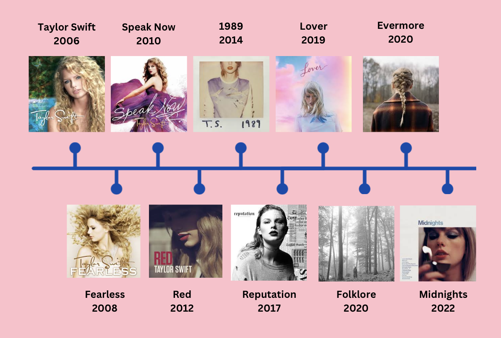
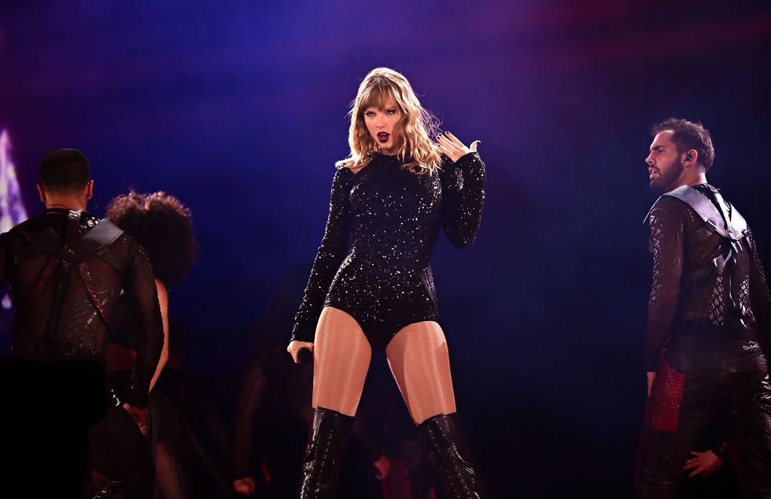
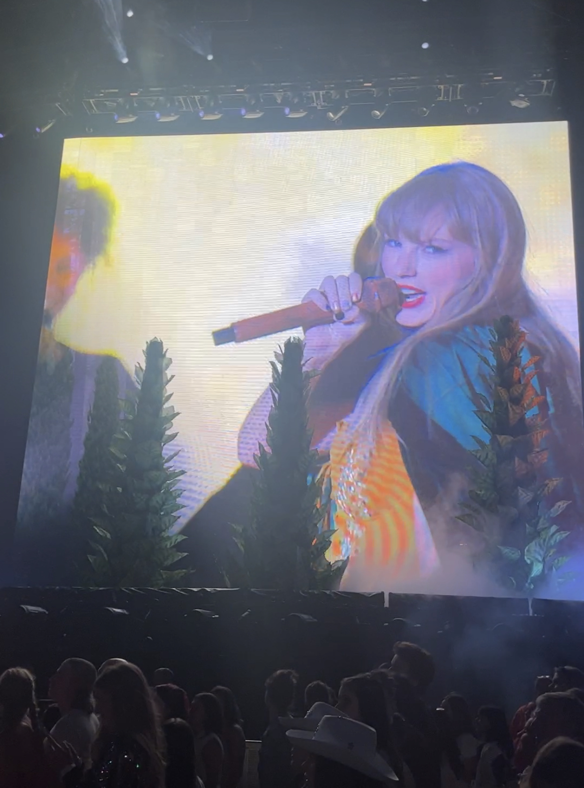
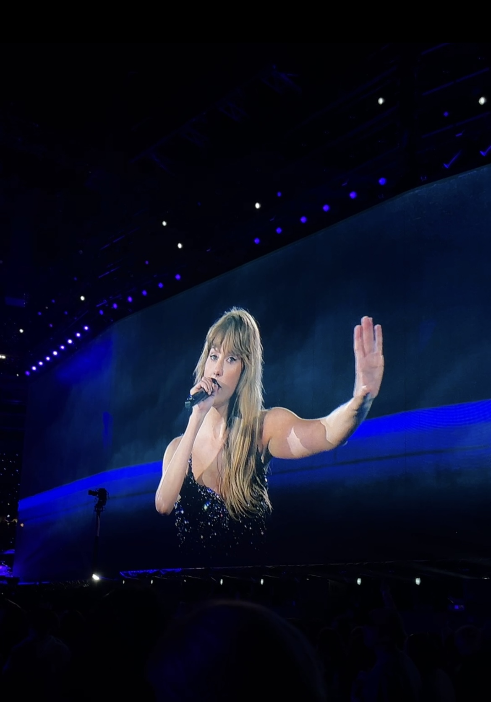

<!DOCTYPE html>
<html lang="en">

</html>

<head>
    <!--meta info-->
    <meta charset="UTF-8">
    <meta name="viewport" content="width=device-width,initial-scale=1.0">
    <meta http-equiv="X-UA-Compatible" content="ie=edge">
    <!--seo fields-->
    <title>Taylor Swift</title>
    <meta name="description" content="">
    <!--fonts-->
    <link rel="preconnect" href="https://fonts.googleapis.com">
    <link href="https://fonts/googleapis.com/css" rel="stylesheet">
    <!--css-->
    <link href="https://cdn.jsdelivr.net/npm/bootstrap@5.3.2/dist/css/bootstrap.min.css" rel="stylesheet"
        integrity="sha384-T3c6CoIi6uLrA9TneNEoa7RxnatzjcDSCmG1MXxSR1GAsXEV/Dwwykc2MPK8M2HN" crossorigin="anonymous">
    <link rel="stylesheet" href="css/final.css">
</head>

<body>
    <div class="center">
        <div>
            <h1>How much money does Taylor Swift really make?</h1>
            
            <div class="source">
                <p>Getty Images</p>
            </div>
        </div>
        <div class="left">
            <h2>Background</h2>
            <p>Taylor Swift was born on Dec. 13, 1989 in West Reading, Pa. She began her career in 2004 with a family
                move to Nashville after signing a music publishing deal with Sony/ATV at age 14. Record executive Scott
                Borchetta discovered the singer at a showcase at Nashville’s
                Bluebird Cafe in 2005, and in 2006, Swift signed with Borchetta’s Big Machine Records, but later got
                into a dispute with Borchetta, Big Machine’s founder, and new owner Scooter Braun. </p>
            <p>Braun purchased Swift’s masters and proposed a deal that would force Swift to “earn” her
                old records by turning in new ones. “I learned about Scooter Braun’s purchase of my masters as it was
                announced to the world,” Swift wrote in an Instagram post in 2019.</p>
            <p>Swift is now signed with Republic Records and has been rerecording her old music in order to gain
                ownership of it. </p>
            <div class="textRightOfimage">
                <div>
                    <h2>Albums</h2>
                    <p>Swift released her debut album Taylor Swift on Oct. 24, 2006. In 2008, Swift released Fearless
                        which became the top selling album of 2009 in the United States. From there, she went on to
                        release eight more albums, four rerecorded ones, five extended plays and four live albums. She
                        has sold an estimated 114 million album units. When calculating this number, 1,250 premium
                        streams (from a paid subscription like Spotify or Apple Music) from the same album, or 3,750
                        free streams from the same album, is equivalent to one album unit.
                    </p>
                    <p>It’s difficult to determine how much artists make off of album sales and streams, but they
                        usually make 10-20% of each album sold. So, if a CD sells for $15, the artist makes between
                        $1.50 and $3.00, according to HowStuffWorks. But, this number isn’t representative of every
                        album sale, because there’s a difference between retail price and wholesale price. Additionally,
                        record contracts may withhold additional royalties and managers and other contributors
                        to the album also get a cut.
                    </p>
                </div>
                


            </div>

            <div class="source">
                <p>Collage made on Canva. </p>
            </div>
            <h2>Merchandise</h2>
            <p>Swift offers a variety of merchandise on her website, taylorswift.com, as well as at her concerts. Shirt
                prices average around $45 and sweatshirts clock in between $60 and $85. Keychains, ornaments, tea cups,
                picture frames and other knick knacks are also offered. </p>
            <p>
                While Swift’s income statements are private, in 2014 Buzzfeed estimated Swift made eight figures
                annually off of merchandise. With inflation and Swift’s soaring reputation, it’s likely she now makes
                tens of millions of dollars in merchandise every year.
            </p>
            <div class="merch">
                
            </div>
            <h2>1989 Albums and Tour</h2>
            <p>Swift's 1989 World Tour grossed $250.7 million across 85 shows, according to Billboard. It was 2015's
                highest grossing concert tour. The 1989 album was released in 2014 and sold 1.287 million copies in its
                first week. The rerecorded version, 1989 Taylor's Version, was released on Oct. 27 and sold 1.359
                million copies its first week. The album also had 375 million streams, the most streams garnered in one
                week out of all four of Swift's rerecorded albums.
            </p>
            <div class="rep1"><iframe style="border-radius:12px"
                    src="https://open.spotify.com/embed/album/1o59UpKw81iHR0HPiSkJR0?utm_source=generator" width="100%"
                    height="352" frameBorder="0" allowfullscreen=""
                    allow="autoplay; clipboard-write; encrypted-media; fullscreen; picture-in-picture"
                    loading="lazy"></iframe></div>

            <h2>Reputation Tour</h2>
            <p>Swift's Reputation Stadium Tour grossed $266.1 million in domestic revenue, according to Billboard. Plus,
                more money was generated since the entire thing was filmed and released on Netflix.
            </p>
            <div class="rep1">
                <iframe style="border-radius:12px"
                    src="https://open.spotify.com/embed/album/6DEjYFkNZh67HP7R9PSZvv?utm_source=generator" width="100%"
                    height="352" frameBorder="0" allowfullscreen=""
                    allow="autoplay; clipboard-write; encrypted-media; fullscreen; picture-in-picture"
                    loading="lazy"></iframe>
            </div>
            <div class="rep">
                
                <iframe width="560" height="315" src="https://www.youtube.com/embed/Pz0uJl-FzJc?si=ieFlKW3KvQoIwohb"
                    title="YouTube video player" frameborder="0"
                    allow="accelerometer; autoplay; clipboard-write; encrypted-media; gyroscope; picture-in-picture; web-share"
                    allowfullscreen></iframe>
            </div>
            <div class="source">
                <p>Getty Images</p>
            </div>

            <h2>The Eras Tour</h2>
            <div class="photos">
                
                
                
            </div>
            <div class="source">
                <p>Original photos by Lia Gorbach</p>
            </div>
            <p>Swift began her most recent tour on March 17. The show is over 3 hours and 44 minutes long and includes
                music
                from all 10 of Swift’s albums released over the past 17 years. The tour’s first 56 shows grossed $780
                million, and Swift completed her 66th show on Nov. 26, out of the total 151 she has scheduled.
            </p>
            <p>Tickets sold for an average of $253 and more than 3 million fans have attended a show. Bloomberg
                estimates Swift has earned $370 million from Eras Tour merchandise and ticket sales. Babson College
                professor Peter Cohan predicts the tour will rake in $4.1 billion by its conclusion.
            </p>
            <em>“If you just took Swift's cut, it would be larger than the yearly economic output of 42 countries. It
                would also be enough to send every American around $17, according to TMZ.”</em>

            <p>It was reported that Swift gave out a total of $50 million in bonuses to her concert crews, tipping her
                equipment truck drivers $100,000. </p>
            <h2>Tour Movie</h2>
            <p>“Taylor Swift: The Eras Tour” movie came to AMC Theatres on Oct. 13, with adult tickets costing $19.89.
                The concert film earned $92.8 million during its three-day debut weekend, making it the highest grossing
                concert film. The previous record was held by the 2011 film “Justin Bieber: Never Say Never”, with a
                lifetime gross of $73 million.
            </p>
            <p>“The Eras Tour” movie was produced by Swift’s tour production company and directed by Sam Wrench. The
                film runs 165 minutes. Swift recently announced an extended version of the movie will be available to
                rent for viewers at home starting Dec. 13.
            </p>
            <div class="trailer">
                <iframe width="560" height="315" src="https://www.youtube.com/embed/2YS8IplgAYE?si=w-20GfjfxFXGM1cu"
                    title="YouTube video player" frameborder="0"
                    allow="accelerometer; autoplay; clipboard-write; encrypted-media; gyroscope; picture-in-picture; web-share"
                    allowfullscreen></iframe>
            </div>
            <h2>Miss Americana</h2>
            <div class="americana">
                <p>Swift sold Miss Americana, a documentary that follows the singer's life and career over a couple of
                    years, to Netflix for $25 million. The film was released on Jan. 31, 2020.</p>
                <iframe width="560" height="315" src="https://www.youtube.com/embed/q07_k5VKuaQ?si=qunMDrK7M9EkDjUf"
                    title="YouTube video player" frameborder="0"
                    allow="accelerometer; autoplay; clipboard-write; encrypted-media; gyroscope; picture-in-picture; web-share"
                    allowfullscreen></iframe>
            </div>
            <h2>So, what is Taylor Swift's net worth?</h2>
            <p>In August 2017, Forbes reported that Taylor Swift’s net worth was $250 million, but it soared to $740
                million in June 2023. In September, Bloomberg reported that Swift’s net worth is officially
                <em>$1.1 billion</em>
                after releasing Speak Now TV, 1989 TV, “The Eras Tour” movie and starting the Eras Tour.
            </p>

            <div class="last">
                <iframe width="900" height="400" frameborder="0" scrolling="no"
                    src="//plotly.com/~liagorbach/2.embed"></iframe>
            </div>
</body